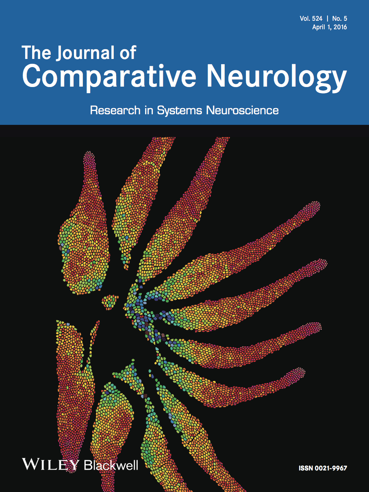
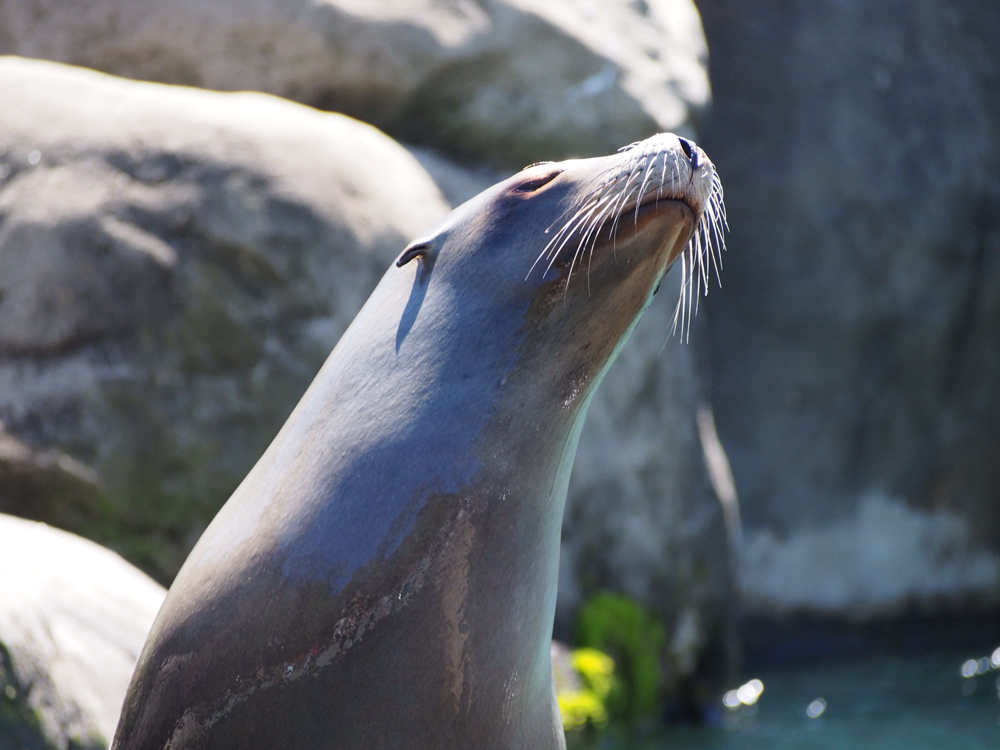

Academic publications
Research papers

-
Sawyer, E. K. 2017. Conserved patterns of trigeminal somatosensory system organization in mammals. Brain Behavior and Evolution. 89(2): 65-67.
-
Turner, E. C., Sawyer, E. K., and Kaas, J. H. 2017. The optic nerves, visual thalamus, superior colliculus, and primary visual cortex of the northern elephant seal (Mirounga angustirostris) and California sea lion (Zalophus californianus). Journal of Comparative Neurology 525(9): 2109-2132.
-
Sawyer, E. K., Turner, E. C., and Kaas, J. H. 2016. The somatosensory brainstem, thalamus and cortex of the California sea lion (Zalophus californianus). Journal of Comparative Neurology 524(9): 1957-75
-
Sawyer, E. K., Catania K. C. 2016. Somatosensory organ topography across the star of a star-nosed mole (Condylura cristata). 2016. Journal of Comparative Neurology 524: 917–929. Cover Article
-
Collins C., Turner E. C., Sawyer, E. K., Young, N. A., Flaherty D. K., and Kaas, J. H. 2016. Cortical cell and neuron density estimates in one chimpanzee hemisphere. Proceedings of the National Academy of Sciences 113 (3) 740-745
-
Sawyer, E. K., Liao C.-C., Qi H., Balaram P., Matrov D., and Kaas J. H. 2015. Barreloid-like structures in the ventroposterior medial subnucleus of the somatosensory thalamus in prosimian galagos. Proceedings of the National Academy of Sciences 12 (22) 7079-7084
-
Sawyer, E. K., Leitch D. B. L., Catania K. C. 2014. Organization of the spinal trigeminal nucleus in Star-nosed moles. Journal of Comparative Neurology. 52(14) 3335-3350
-
Catania K. C., Catania E. H., Sawyer, E. K., Leitch D. B. 2013. Barrelettes without barrels in the American Water Shrew. PLoS One. 8(6): e65975
-
Chance S. A., Sawyer, E. K., Clover L. M., Wicinski B., Hof P. R., Crow T. J. 2012. Hemispheric asymmetry in the fusiform gyrus distinguishes Homo sapiens from chimpanzees. Brain Structure and Function. 218:1391-1405
-
Van Veluw S. J., Sawyer, E. K., Clover L., Cousijn H., De Jager C., Esiri M. M., Chance S. A. 2012. Prefrontal cortex cytoarchitecture in normal aging and Alzheimer’s disease: a relationship with IQ. Brain Structure and Function, 217: 797-808
-
Wood J. B., Maynard A., Lawlor A., Sawyer, E. K., Simmons D., Pennoyer K. E., Derby, C. D. 2010. Ink of Caribbean reef squid, Sepioteuthis sepioidea, is a feeding deterrent against predatory French grunts, Haemulon flavolineatum. Journal of Experimental Marine Biology and Ecology, 388: 20-27.

Chapters
Sawyer, E. K., and Sarko, D. K. 2017. Evolution of the somatosensory brainstem in mammals. In Kaas, J. H.and Herculano-Houzel, S., Evolution of the Nervous System. 2:437-459 New York, NY: Elsevier
Conference Abstracts
- Turner E.C., Sawyer, E. K., Kaas J. H. The visual system of the Northern Elephant Seal (Mirounga angustirostris). Poster presentation at the Society for Neuroscience meeting; Nov. 12, 2016; San Diego, CA.
- Sawyer, E. K., Liao C.-C., Qi H., Balaram P., Matrov D., and Kaas J. H. Barreloid-like structures in the ventroposterior medial subnucleus of the somatosensory thalamus in prosimian galagos. Poster presentation at the Society for Neuroscience meeting; Nov. 15, 2014; Washington, DC.
- Balaram P., Sawyer, E. K., Kaas, J. H. VGLUT1 and VGLUT2 identify driving (class 1) and modulatory (class 2) glutamatergic projections in the somatosensory system of prosimian, New World, and Old World primates. Poster presentation at the Society for Neuroscience meeting; Nov. 15, 2014; Washington, DC.
- Sawyer E. K., Leitch D. B.,Catania K. C. “Organization of the spinal trigeminal nucleus in the Star-nosed mole.” Poster presentation at the Society for Neuroscience meeting; Oct. 16, 2012; New Orleans, LA.
- Sawyer, E. K., Leitch D. B. and Catania K. C. “Organization of the spinal trigeminal nucleus in the Star-nosed mole”. Poster session at the 2012 Neuroscience graduate program retreat 2012 Sept. 20; Nashville, TN.
- Leitch, D. B., Sawyer, E. K., Catania K. C. “Mechanoreception and the integumentary sensory organs in Crocodylia.” Presentation at annual meeting of the Society for Neuroscience meeting, Mechanisms of Somatosensation nanosymposium. Oct. 16, 2012; Ernest N Morial Convention Center, New Orleans, LA.
- Sawyer, E. K.., Clover L., Crow T. J., Hof P. R., Chance S. A. “Neuronal organization and plasticity in Wernicke’s area differ between humans and chimpanzees.” Poster presentation at The Primate Mind meeting; Jun. 4-7, 2009; Erice, Italy.